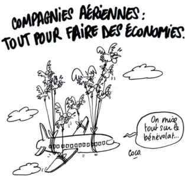

Solution écologique
Si vous êtes arrivé sur cette page, c’est que vous voulez améliorer vos connaissances sur la pollution de l’air.
Introduction
L’émission de CO2 est une préoccupation pour la France. En 2018, cette dernière avait produit en un an 445 millions de tonnes de CO2 pour une population de 65 millions de personnes. Ce chiffre est en diminution de 4,2% par rapport à 2017. Or, cette baisse est bien trop faible pour avoir une chance de sauver la planète. Les moyens mis en place ne sont pas suffisants. N’est-il donc pas temps d’innover ?
Biocarburants
Un biocarburant est un combustible d’origine végétale, animale, bactérienne … Autrefois, les biocarburants de 1ère génération avaient été envisagés comme une solution pour les carburants. Mais ils utilisaient des terres agricoles et cela a entrainé des famines. Ils ont donc été bannis des alternatives aux énergies fossiles. Mais ce n’est pas le cas de tout le monde. La société Agrisoma Bioscience a décidé de donner une seconde chance aux biocarburants. Elle utilise une graine de moutarde appelée « Carinata ». Cette plante appartient aux biocarburants de troisième génération dont la production a plus que triplé au cours de ces dernières années !
Extrait de la vidéo de résentation de Biocarburant Carinata (2018) - ©Agrisoma
Carinata
Cette plante développée par Agrisoma a un autre super-pouvoir : elle favorise l’agriculture ! D’après le site officiel d’Agrisoma, la Carinata :

Remplace le kérosène nécessaire, ce qui permet de parcourir 160 millions de km
Produit plus de 22 millions de kg de protéines pour nourrir des animaux
Améliore la qualité des sols et absorber le CO2
Évite l’encrassement des avions, contrairement au kérosène
Augmente la capacité de propulsion des avions
Produit plus d’énergie que le kérosène pour un volume identique
Produit du biodiésel (traditionnel et renouvelable). La France est l’un des principaux producteurs avec l’Allemagne.
Le Boeing 787-9 de Qantas a volé uniquement avec des biocarburants en janvier 2018. Le biocarburant à partir de Carinata a permis de réduire de 30% les émissions de CO2.
Habitudes
Mais cette miraculeuse plante ne pourra pas sauver le monde à elle toute seule si VOUS n’êtes pas là. Que pouvez-vous faire en tant que citoyen ordinaire ? Voici quelques conseils à appliquer lorsque vous prenez l’avion :
1
Voyage léger
Cela peut sembler anecdotique mais un avion plus léger aura besoin de moins de carburant pour la même distance. Dites adieu aux tapis du Liban pour tata Jacqueline !
2
Prendre des vols
Prendre des vols directs. Lorsque l’avion s’arrête pour prendre du carburant, il est obligé de se poser au sol. Or nous avons vu qu’un avion consomme plus au décollage et à l’atterrissage. La production de CO2 sera donc plus grande. « Oui mais les vols sans escale sont beaucoup plus chers. » C’est une idée reçue ! Voici les prix pour un vol depuis New-York jusqu’à Vienne :
3
Voyager en classe économique
Une étude de World Bank montre que vous triplez votre émission de CO2 lorsque vous voyagez en business ou en première classe. En classe économique, il y a plus de sièges et donc moins de place perdue.
4
Choisir des compagnies réputées « écologiques »
Choisir des compagnies réputées « écologiques ». Certaines ont choisi de réduire leur émission de CO2 par divers moyens (tissus plus légers pour les sièges, moteurs moins consommateurs, nouveaux trajets plus efficaces … ). Évitez les compagnies aériennes les plus pollueuses en 2018 :
5
Baisser les stores de votre hublot
Baisser les stores de votre hublot. Cela permet de réduire la déperdition thermique entre l’intérieur de l’avion (20°C) et l’extérieur (-50°C). Donc, moins d’énergie est consommée pour le chauffage.
6
Amener ses propres couverts et serviettes
Tout le monde sait que le plastique est extrêmement nocif pour l’environnement. Donc la compagnie Hifly a décidé de réduire sa consommation dans ce domaine. Elle n’utilise plus que des couverts en bois réutilisable. Ainsi, quatre vols transportant 700 personnes auraient permis d’éviter l’utilisation de 350 kilogrammes de plastique. Mais c’est la seule compagnie qui opte vraiment pour des vols « sans-plastique ».
Si vous voulez être plus écologique, je vous conseille les autres projets réalisés dans le cadre du DUT MMI Montbéliard. Ils abordent d’autres thématiques environnementales et des solutions diverses.